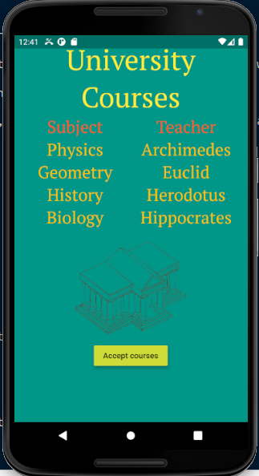
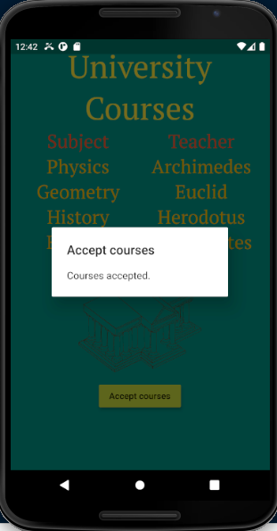
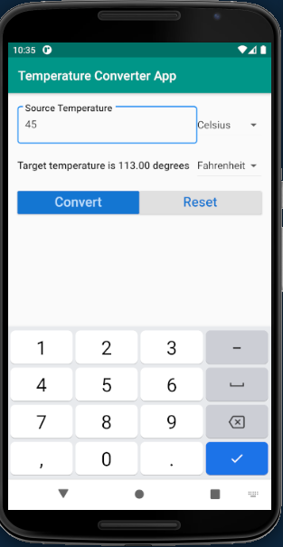
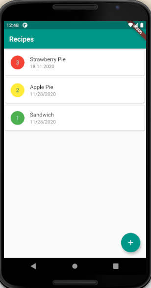
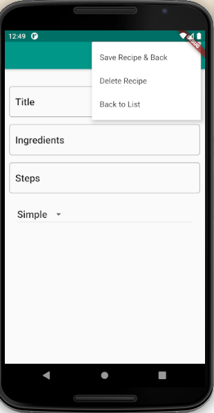
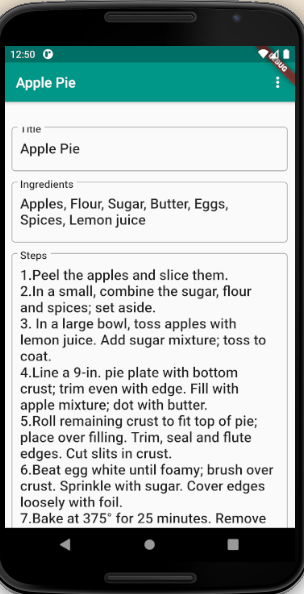
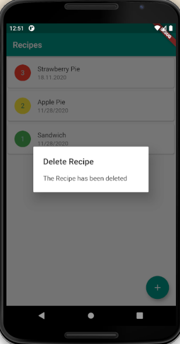

Flutter is a free and open-source, cross-platform development framework created by Google. It is used to develop high-performance, native mobile applications for iOS and Android from a single code base. Apart from mobile platforms, it can also be used to develop applications for Windows, Mac, Linux, Google Fuchsia OS and the web.
There are three ways to develop applications for mobile:
Flutter falls in the hybrid category and was developed by Google with features that overcome the current issues with hybrid apps:
Flutter applications are written in Dart which is a programming language developed by Google. Dart is an object-oriented language that supports both ahead-of-time and just-in-time compilation. The Dart language offers many of the features seen in other languages including garbage collection, async-await, strong typing, generics, as well as a rich standard library.
Follow the instructions from here in order to create a new application, which will be named hello_flutter.
Remove the widget_test.dart file as it will not be required for the moment. Remove the starting code from main.dart and replace with the following:
import 'package:flutter/material.dart'; // #1
void main() { // #2
runApp( // #3
Center( // #4
child: Text( // #5
"Hello, Flutter!",
textDirection: TextDirection.ltr // #6
),
)
);
}
In order to enhance the design of the application, we can use a MaterialApp widget to wrap the other widgets. The MaterialApp widget is an application that uses material design and wraps a number of widgets that are commonly required for material design applications. The MaterialApp allows us to customize our application with its properties.
Modify the code as follows:
import 'package:flutter/material.dart';
void main() {
runApp(MaterialApp( // #1
title: "Hello Flutter App", // #2
home: Material( // #3
color: Colors.teal, #4
child: Center( #5
child: Text(
"Hello, Flutter!",
textDirection: TextDirection.ltr,
style: TextStyle(color: Colors.white, fontSize: 36.0), #6
),
),
)));
}
The next step is to add an application bar. This is done by using the Scaffold widget. The Scaffold class implements the basic material design visual layout structure. It provides APIs for showing drawers, snack bars and bottom sheets among others.
Modify the code to look like this:
import 'package:flutter/material.dart';
void main() {
runApp(MaterialApp(
title: "Hello Flutter App",
home: Scaffold( // #1
appBar: AppBar(title: Text("Title in App Bar")), // #2
body: Material( // #3
color: Colors.teal,
child: Center(
child: Text(
"Hello, Flutter!",
textDirection: TextDirection.ltr,
style: TextStyle(color: Colors.white, fontSize: 36.0),
),
),
))));
}
Even though we can write the entire application code in the runApp method, this is not recommended especially if the application grows over time. In general, the main method should be as simple as possible.
The Flutter framework is written in the Dart programming language, which is an object-oriented language. This means that a widget is nothing more than an object, an instance of a class. Although the Flutter framework provides many widgets, we can also create our own.
In order to simplify the main method, we will create a new class called HelloFlutterApp and move the application code in this class. The HelloFlutterApp class will extend the StatelessWidget abstract class, which is a generic widget that does not have any state. Then, the HelloFlutterApp class needs to override the build method of the superclass. We move the MaterialApp widget from main to the build method and in the runApp method we return a new instance of HelloFlutterApp. Also, we can further simplify the main method by using the arrow notation.
The code should look like this:
import 'package:flutter/material.dart';
void main() => runApp(new HelloFlutterApp()); // #1
class HelloFlutterApp extends StatelessWidget { // #2
@override
Widget build(BuildContext context) { // #3
return MaterialApp(
title: "Hello Flutter App",
home: Scaffold(
appBar: AppBar(title: Text("Title in App Bar")),
body: Material(
color: Colors.teal,
child: Center(
child: Text(
"Hello, Flutter!",
textDirection: TextDirection.ltr,
style: TextStyle(color: Colors.white, fontSize: 36.0),
),
),
)));
}
}
To further modularize the code, we can create a file for each class and files could be structured in packages such as screens, pages etc. For our application, we want to have the home screen (the material widget in the home property)in a separate file.
Create a new folder called screens in the lib directory. Then create a file home.dart and a class Home and move the code from the body property in the build method of the Home class.
The home.dart file should look like this:
import 'package:flutter/material.dart';
class Home extends StatelessWidget {
@override
Widget build(BuildContext context) {
return Material(
color: Colors.teal,
child: Center(
child: Text(
"Hello, Flutter!",
textDirection: TextDirection.ltr,
style: TextStyle(color: Colors.white, fontSize: 36.0),
),
),
);
}
}
The main class will look like this:
import 'package:flutter/material.dart';
import 'screens/home.dart'; // #1
void main() => runApp(new HelloFlutterApp());
class HelloFlutterApp extends StatelessWidget {
@override
Widget build(BuildContext context) {
return MaterialApp(
debugShowCheckedModeBanner: false, // #2
title: "Hello Flutter App",
home: Scaffold(
appBar: AppBar(title: Text("Title in App Bar")), body: Home())); // #3
}
}
Since Widgets are instances of a class, we can add our own methods to a class to perform the business logic.
For our application, we want to customize the text shown in the Home screen. For this, we create a new method in the Home class called sayHello which returns a String.
Dart is a strongly typed language meaning that if we declare a variable of type String (String hello; for instance) then we cannot change its type later in the code. However, if we declare hello using var (var hello;) then hello can hold any type. It is recommended to specify the specific type for a variable and not use var. Numbers can be of type int, double and num (num can be either an int or a double).
Now we want our application to show a different text to the user based on the time of the day:
The home.dart file should look like this:
import 'package:flutter/material.dart';
class Home extends StatelessWidget {
@override
Widget build(BuildContext context) {
return Material(
color: Colors.teal,
child: Center(
child: Text(
sayHello(), // #1
textDirection: TextDirection.ltr,
style: TextStyle(color: Colors.white, fontSize: 36.0),
),
),
);
}
String sayHello() {
String hello;
DateTime now = DateTime.now();
int hour = now.hour;
int minute = now.minute;
String minutes = (minute < 10) ? "0" + minute.toString() : minute.toString(); // #2
if (hour < 12) {
hello = "Good morning!";
} else if (hour < 18) {
hello = "Good afternoon!";
} else {
hello = "Good evening!";
}
return "It's now " + hour.toString() + ":" + minutes + ".\n" + hello;
}
}
Flutter provides a set of basic Widgets that can be used along with Scaffold and AppBar in order to develop applications. This basic Widgets include:
Container is a widget class that allows you to customize its child widget through its properties. It can be seen as the equivalent of the div class from html. The Container widget allows us to specify properties such as:
Both margin and padding use the EdgeInsets.All(10.0) constructor which creates a margin or padding on all 4 sides of a box.
Container widget example:
Container(
alignment: Alignment.center,
color: Colors.teal,
width: 192.0,
height: 96.0,
child: Text("This is a container widget", textDirection: TextDirection.ltr,)
)
More details about the Container widget can be found here .
More details about box constraints can be found here .
The Text widget displays a string of text with a single style. The string can be single line or multiline. The Text widget provides properties such as:
Text widget example:
Text(
"This is a text widget.",
textDirection: TextDirection.ltr,
style: TextStyle(
fontSize: 50,
decoration: TextDecoration.none,
fontFamily: 'Schyler',
fontWeight: FontWeight.normal),
)
If we want to use a custom font, we have to:
fonts:
- family: Oswald
fonts:
- asset: fonts/Oswald-Regular.ttf
- asset: fonts/Oswald-Medium.ttf
style: italic
- asset: fonts/Oswald-Light.ttf
weight: 300
- asset: fonts/Oswald-ExtraLight.ttf
weight: 100
- asset: fonts/Oswald-SemiBold.ttf
weight: 600
- asset: fonts/Oswald-Bold.ttf
weight: 800
More details about the Text widget can be found here .
The Row and Column widgets allow us to better group the widgets in an application. The Row widget is a list of child widgets placed horizontally, while the Column widget is a list of child widgets placed vertically. Since these widgets contain an array of widgets, they have a children property instead of a child property.
Row widget example:
Row(
children: [
Text(
"This is the first row.",
textDirection: TextDirection.ltr,
),
Expanded( // #1
child: Text(
"This is the second row.",
textDirection: TextDirection.ltr,
)),
],
)
Column widget example:
Column(
children: [
Row(children: [...]),
Row(children: [...]),
],
)
More details about the Row widget can be found here .
More details about the Column widget can be found here .
The Image widget is used to display an image. The image can come from the following sources:
Flutter accepts images in many formats, however it does not support .svg files yet. Images can be downloaded from https://openclipart.org/ . To import the images we need to uncomment the assets section from the pubspec.yaml file and add the path to the image:
assets:
- images/image.png
To use an image imported from the assets, we define an AssetImage object and we pass this object to the Image constructor:
AssetImage imageAsset = AssetImage('images/image.png');
Image image = Image(image: imageAsset, width: 400.0, height: 400.0);
More details about the Image widget can be found here .
A raised button is based on a Material widget whose Material.elevation increases when the button is pressed. RaisedButton adds dimension to otherwise mostly flat layouts, such as a long lists of content or wide empty spaces.
RaisedButton widget example:
RaisedButton(
child: Text("Raised button"),
color: Colors.deepPurple,
elevation: 5.0,
onPressed: () { // #1
callback(context);
},
)
In the callback method we can use an alert dialog to give feedback to the user. An AlertDialog informs the user about situations that require acknowledgement. An alert dialog has an optional title and an optional list of actions. The title is displayed above the content and the actions are displayed below the content.
AlertDialog widget example:
var alert = AlertDialog(
title: Text("AlertDialog Title"),
content: Text("AlertDialog Content"),
);
showDialog(
context: context,
builder: (BuilderContext) => alert
);
More details about the RaisedButton widget can be found here .
More details about the AlertDialog widget can be found here .
Now we will develop a small application to put in practice all the widgets presented during this part. The application will have one screen which shows some university courses along with their teachers, an image and a raised button to accept the courses presented on the screen.
We begin with the main method in main.dart.
import 'package:course_management/home.dart';
import 'package:flutter/material.dart'; // #1
void main() => runApp(MyApp()); // #2
class MyApp extends StatelessWidget {
@override
Widget build(BuildContext context) {
return MaterialApp( // #3
title: 'University Courses',
home: Home(), // #4
debugShowCheckedModeBanner: false,
);
}
}
After writing the main class, we create the home.dart file where we will write the code for the home screen.
import 'package:flutter/material.dart';
class Home extends StatelessWidget {
@override
Widget build(BuildContext context) {
return Container( // #1
child: Column( // #2
children: <Widget>[
text("University Courses", Colors.yellow, 'PTSerif', 50.0, // #3
FontWeight.w400),
Row(
children: <Widget>[
Expanded(
child: text("Subject", Colors.deepOrange, 'PTSerif', 30.0,
FontWeight.w500)),
Expanded(
child: text("Teacher", Colors.deepOrange, 'PTSerif', 30.0,
FontWeight.w500)),
],
),
Row(children: <Widget>[
Expanded(
child: text(
"Physics", Colors.amber, 'PTSerif', 30.0, FontWeight.w300)),
Expanded(
child: text("Archimedes", Colors.amber, 'PTSerif', 30.0,
FontWeight.w300)),
]),
Row(children: <Widget>[
Expanded(
child: text("Geometry", Colors.amber, 'PTSerif', 30.0,
FontWeight.w300)),
Expanded(
child: text(
"Euclid", Colors.amber, 'PTSerif', 30.0, FontWeight.w300)),
]),
Row(children: <Widget>[
Expanded(
child: text(
"History", Colors.amber, 'PTSerif', 30.0, FontWeight.w300)),
Expanded(
child: text("Herodotus", Colors.amber, 'PTSerif', 30.0,
FontWeight.w300)),
]),
Row(children: <Widget>[
Expanded(
child: text(
"Biology", Colors.amber, 'PTSerif', 30.0, FontWeight.w300)),
Expanded(
child: text("Hippocrates", Colors.amber, 'PTSerif', 30.0,
FontWeight.w300)),
]),
Row(
children: <Widget>[
Image(
image: AssetImage('images/university.png'),
width: 200.0,
height: 200.0,
)
],
mainAxisAlignment: MainAxisAlignment.center,
),
Row(
children: <Widget>[
RaisedButton(
child: Text("Accept courses"),
color: Colors.lime,
elevation: 5.0,
onPressed: () {
onPressed(context);
},
)
],
mainAxisAlignment: MainAxisAlignment.center,
),
],
),
color: Colors.teal,
padding: EdgeInsets.all(10.0),
);
}
Widget text(String data, MaterialColor color, String fontFamily,
double fontSize, FontWeight fontWeight) {
return Text(data,
textAlign: TextAlign.center,
style: TextStyle(
decoration: TextDecoration.none,
color: color,
fontFamily: fontFamily,
fontSize: fontSize,
fontWeight: fontWeight,
));
}
void onPressed(BuildContext context) { // #4
var alert = AlertDialog(
title: Text("Accept courses"),
content: Text("Courses accepted."),
);
showDialog(context: context, builder: (BuildContext) => alert);
}
}
Since we use a custom font and an image, we also need to update the assets and fonts sections of the pubspec.yml file.
...
assets:
- university.png
...
fonts:
- family: PTSerif
fonts:
- asset: fonts/PTSerif-Regular.ttf
- asset: fonts/PTSerif-Italic.ttf
style: italic
- asset: fonts/PTSerif-Bold.ttf
weight: 700
- asset: fonts/PTSerif-BoldItalic.ttf
style: italic
weight: 700
...
The final application should look like this:

So far, the applications that we developed showed only static content using non-interactive and stateless widgets. However, more advanced applications should allow the user to input data and react to this input. For an application to be able to handle user input, it needs to maintain state. State represents the information that can be read synchronously when the widget is built (initialisation stage) and might change during the lifetime of the widget.
In Flutter, it is not the widget that changes, but the State associated with it. Classes that inherit StatefulWidget are immutable, while the State class is mutable.
StatelessWidget | StatefulWidget |
Does not require a mutable state #1 | Has mutable state |
Overrides the build() method #2 | Overrides the createState() method and returns a State |
Use when the UI depends on information in the object itself | Use when the UI can change dynamically |
class ClassWithState extends StatefulWidget { #1
@override
State<StatefulWidget> createState() => _ClassWithStateState(); #1
}
class _ClassWithStateState extends State<ClassWithState> { #2
String state = "";
@override
Widget build(BuildContext context) { #3
...
eventProperty: (String value) {
setState(() {state = value;}); #4
}
...
}
}
Examples of events include:
DropdownButton is a material design button that lets the user select from a number of items. The button shows the currently selected item as well as an arrow that opens a menu for selecting another item.
DropdownButton is a generic class which means that a type T needs to be specified when using it. The type T is the type of the value that each dropdown item represents. All the entries in the dropdown menu have to be of the same type. The items in a dropdown menu are instances of DropdownMenuItem class.
The onChanged callback should update a state variable that defines the dropdown's value. It should also call State.setState to rebuild the dropdown with the new value.
A dropdown button should look like this:
DropdownButton<T>(
items: <T>[item_1, item_2, ..., item_n].map((T value) { // #1
return DropdownMenuItem<T>(
value: value,
child: <child widget>,
);
}).toList(), // #2
value: <value of type T>, // #3
onChanged: (T value) {
setState(() {state = value;});
},
)
More details about the DropdownButton widget can be found here .
More details about the DropdownMenuItem widget can be found here .
To practice with StatefulWidgets and DropdownButtons, we will build a Temperature Converter application.
We begin with the main method and the MyApp class:
import 'package:flutter/material.dart';
void main() => runApp(MyApp());
class MyApp extends StatelessWidget {
@override
Widget build(BuildContext context) {
return MaterialApp(
title: 'Temperature converter',
theme: ThemeData(primarySwatch: Colors.blue,),
home: TemperatureConverter(),
debugShowCheckedModeBanner: false,
);
}
}
Next, we write the TemperatureConverter class which extends a StatefulWidget:
class TemperatureConverter extends StatefulWidget {
@override
State<StatefulWidget> createState() => _TemperatureConverterState();
}
Then, we write the state class where the UI is actually implemented.
The state of a widget is represented by the properties of the class that are mutable.
class _TemperatureConverterState extends State<TemperatureConverter> {
final double _padding = 5.0;
final _temperatureScales = ['Celsius', 'Fahrenheit', 'Kelvin'];
TextEditingController sourceTemperatureController = TextEditingController();
String result = '';
String currentSourceScale = 'Celsius';
String currentTargetScale = 'Fahrenheit';
Since _TemperatureConverterState extends State, it must implement the build method that returns the Widget representing the UI.
@override
Widget build(BuildContext context) {
TextStyle textStyle = Theme.of(context).textTheme.headline6; // #1
return Scaffold( // #2
appBar: AppBar( // #3
title: Text("Temperature Converter App"),
backgroundColor: Colors.teal,
),
The body property of the Scaffold contains the primary content of the scaffold:
body: Container(
padding: EdgeInsets.all(15.0),
child: Column(children: <Widget>[
Padding( // #1
padding: EdgeInsets.only(top: _padding, bottom: _padding),
child: Row(
children: <Widget>[
Expanded(
child: TextField( #2
controller: sourceTemperatureController, // #3
decoration: InputDecoration( // #4
hintText: "e.g. 30", // #5
labelText: "Source Temperature", // #6
labelStyle: textStyle, // #7
border: OutlineInputBorder( // #8
borderRadius: BorderRadius.circular(5.0))),
keyboardType: TextInputType.number, // #9
),
),
DropdownButton<String>(
items: _temperatureScales
.map((String value) => DropdownMenuItem(
value: value,
child: Text(value),
))
.toList(),
value: currentSourceScale,
onChanged: (String value) {
setState(() {
this.currentSourceScale = value;
});
},
),
],
),
),
These widgets define the rest of the layout:
Padding(
padding: EdgeInsets.only(top: _padding, bottom: _padding),
child: Row(
children: <Widget>[
Expanded(
child: Text(
"Target temperature is " + result + " degrees",
style: TextStyle(
fontWeight: FontWeight.w500, fontSize: 16.0),
),
),
DropdownButton<String>(
items: _temperatureScales
.map((String value) => DropdownMenuItem(
value: value,
child: Text(value),
))
.toList(),
value: this.currentTargetScale,
onChanged: (String value) {
setState(() {
this.currentTargetScale = value;
});
},
),
],
),
),
Padding(
padding: EdgeInsets.only(top: _padding, bottom: _padding),
child: Row(
children: <Widget>[
Expanded(
child: RaisedButton(
color: Theme.of(context).primaryColorDark,
textColor: Theme.of(context).primaryColorLight,
onPressed: () {
setState(() {
result = _convert();
});
},
child: Text(
'Convert',
textScaleFactor: 1.5,
),
),
),
Expanded(
child: RaisedButton(
color: Theme.of(context).buttonColor,
textColor: Theme.of(context).primaryColorDark,
onPressed: () {
setState(() {
_reset();
});
},
child: Text(
'Reset',
textScaleFactor: 1.5,
),
)),
],
),
),
],
),
),
);
}
This methods implement the logic for converting a temperature and reseting the form by deleting the contents of the fields.
String _convert() {
double sourceTemperature = double.parse(sourceTemperatureController.text);
double targetTemperature;
if (currentSourceScale == "Celsius") {
if (currentTargetScale == "Fahrenheit") {
setState(() { targetTemperature = sourceTemperature * 1.8 + 32; });
} else if (currentTargetScale == "Kelvin") {
setState(() { targetTemperature = sourceTemperature + 273.15; });
} else { setState(() { targetTemperature = sourceTemperature; }); }
}
if (currentSourceScale == "Fahrenheit") {
if (currentTargetScale == "Celsius") {
setState(() { targetTemperature = (sourceTemperature - 32) / 1.8; });
} else if (currentTargetScale == "Kelvin") {
setState(() { targetTemperature = (sourceTemperature + 459.67) * 5 / 9; });
} else { setState(() { targetTemperature = sourceTemperature; }); }
}
if (currentSourceScale == "Kelvin") {
if (currentTargetScale == "Celsius") {
setState(() { targetTemperature = sourceTemperature - 273.15; });
} else if (currentTargetScale == "Fahrenheit") {
setState(() { targetTemperature = sourceTemperature * 9 / 5 - 459.67; });
} else { setState(() { targetTemperature = sourceTemperature; }); }
}
result = targetTemperature.toStringAsFixed(2);
return result;
}
void _reset() {
sourceTemperatureController.text = "";
setState(() { result = ""; });
}
}
The final application should look like this:

You can test that the application works properly by using this online temperature converter.
The goal of this part is to develop a real world application in Flutter by combining most of the concepts learned in the previous parts and introducing new concepts such as navigation or database storage.
The application we are going to develop is a recipe application, that allows us to write new recipes or read the existing ones.
To make the application easier to understand and maintain, we will break it into several modules. After creating a new project, we create 3 folders:
In our application we need to define a model class for the recipe. A model class is typically used to "model" the data in your application by mirroring the data source such as a database or a JSON. The model class holds all properties, constructors and methods.
In the model folder, we create the recipe.dart file where we will define the Recipe model class:
class Recipe {
First, we define the properties that describe a recipe such as a title, the ingredients, the steps to follow and the difficulty. The id property is required for the database. Optionally, we can specify a date for the recipe.
The _ from the property names means that the field is private, not accesible from outside the class.
int _id;
String _title;
String _ingredients;
String _steps;
int _difficulty;
String _date;
Then, we need to define a way to instantiate the Recipe objects with constructors. Constructors are a special method that is used to initialize an object when created in the program. They have the same name as the class name and don't have any return type.
In Dart, if we do not define a constructor, the compiler will automatically create the default constructor that doesn't have any parameters in it. However, if we define a constructor, the default constructor will not be created. The syntax for creating a constructor is the following:
class_name( [ parameters ] ){
// Constructor Body
}
We want to define two constructors with parameters, one without the id and one with it. We need to make this distinction, because the id is assigned when the recipe is inserted in the database and not when creating the object.
The notation used below for the constructor is a shorthand notation in Dart using the keyword this. In this way, the value you pass in the parameter will be directly linked to the corresponding object property in the constructor. Optional parameters are enclosed in square brackets.
Recipe(this._title, this._ingredients, this._steps, this._difficulty, [this._date]);
In Dart, we can't define two constructors with the same name even though they have different parameters. To solve this problem, Dart introduced named constructors, which allow the user to make multiple constructors with a different name, using this syntax:
class_name.constructor_name ( parameters ){
// Body of Constructor
}
We will name the second constructor withId:
Recipe.withId(this._id, this._title, this._ingredients, this._steps, this._difficulty, [this._date]);
Next, we will define getters for the properties. If we do not want to make any change to the properties before accessing them, then we can use the fat arrow notation to shorten the method.
int get id => _id;
String get title => _title;
String get ingredients => _ingredients;
String get steps => _steps;
int get difficulty => _difficulty;
String get date => _date;
Then, we define the setters for the properties. We do not need a setter for the id, because once it is set by the database we do not want to change it. We can also use the setter to check if the input supplied respects some constraints such as minimum/maximum length. If the values are not what we expect, we can also throw errors from the setter.
set title(String value) {
if (value.length <= 100) {
_title = value;
}
}
set ingredients(String value) {
_ingredients = value;
}
set steps(String value) {
_steps = value;
}
set difficulty(int value) {
_difficulty = value;
}
set date(String value) {
_date = value;
}
We will also define some helper methods that convert the recipe object into a Map (a key-value pair collection) and vice versa. The second method will be implemented as another named constructor. These methods will be helpful for interacting with the database.
Map <String, dynamic> toMap() {
var map = Map<String, dynamic>();
map["title"] = _title;
map["ingredients"] = _ingredients;
map["steps"] = _steps;
map["difficulty"] = _difficulty;
map["date"] = _date;
if (_id != null) {
map["id"] = _id;
}
return map;
}
Recipe.fromObject(dynamic o) {
this._id = o["id"];
this._title = o["title"];
this._ingredients = o["ingredients"];
this._steps = o["steps"];
this._difficulty = o["difficulty"];
this._date = o["date"];
}
}
In our application we will make use of SQFLite, which is a Flutter plugin that allows us to use SQLite. According to sqlite.org, SQLite is an in-process library that implements a self-contained, serverless, zero-configuration, transactional SQL database engine. To understand this definition better, we will break it into concepts and explain them:
In order to use SQLite in the application, the SQFLite plugin needs to be installed, by specifying it in the pubspec.yaml file. Apart from the sqflite plugin, we will also need to define the following dependencies:
dependencies:
sqflite: any
path_provider: any
intl: ^0.15.7
There are two ways to interact with SQLite in Flutter:
db.rawQuery("SELECT * FROM myTable");
db.rawInsert('INSERT INTO myTable(title, description) VALUES("some title", "some description")');
db,rawUpdate('UPDATE myTable SET title = ?, WHERE title = ?', ["new title", "old title"]);
db.rawDelete('DELETE FROM myTable WHERE id = 1');
db.update('myTable',
myObject.toMap(), // this is why we defined a toMap method in the model class
where: "$colId = ?",
whereArgs: [myObject.id]);
Both of these approaches are asynchronous, because accessing the database can take a long time and it would render the application unresponsive if they would be synchronous.
When a Flutter application is started, a single thread (path of exection) is automatically created. This thread is the main thread of the application and is also named the UI thread, because one of its responsibilities is to draw all the widgets on the screen and responding to user input. If we run long operations such as database queries on the main thread, it could render the application unresponsive. To counter this problem, we can delegate such long tasks to other secondary threads to run in parallel, so that the main thread would remain responsive. When the secondary threads finish their tasks, they return their results to the main thread which will react accordingly.
In Flutter, asynchronous programming is implemented using Future, Async and Await.
A Future represents an object that will return a value sometime in the future. If we create a method that returns a Future, when we call it, we will immediately receive a Future object and the method will spawn a secondary thread to do the task. When the tasks are finished, the then method from the main thread is called with the result.
Future<List> getRecipes() {
// secondary thread
}
recipesFuture = getRecipes().then((result) {
// main thread
}
The async and await keywords allow us to write asynchronous code that looks like synchronous one. We use the await keyword for long performing tasks. A method marked as async must return a Future or if it is void, it will return a Future wrapped around a null.
void doSomething() async {
result = await getRecipes();
}
Next we will create a file called dbhelper.dart in the util folder.
We begin by importing the required packages:
import 'package:sqflite/sqflite.dart';
import 'dart:async';
import 'dart:io';
import 'package:path_provider/path_provider.dart';
import 'package:recipe_app/model/recipe.dart';
Then, we define the class and define some constants that will help with the queries:
class DbHelper {
String tblRecipe = "recipe";
String colId = "id";
String colTitle = "title";
String colIngredients= "ingredients";
String colSteps = "steps";
String colDifficulty = "difficulty";
String colDate = "date";
Since the DbHelper class will be used to retrieve the database and make reads and writes over it, a single instance for the entire application will be enough. Then, it would be useful to restrict its instantiation to one object only using the Singleton pattern. To implement the Singleton pattern in Dart we need to:
Now we will add the Singleton pattern implementation to the DbHelper class:
static final DbHelper _dbhelper = DbHelper._internal(); // #1
DbHelper._internal(); // #2
factory DbHelper() { // #3
return _dbhelper;
}
Next, we will implement a method to initialize the database:
Future<Database> initializeDb() async { // #1
Directory dir = await getApplicationDocumentsDirectory(); // #2
String path = dir.path + "recipes.db";
var dbRecipes = await openDatabase(path, version: 1, onCreate: _createDb); // #3
return dbRecipes;
}
void _createDb(Database db, int newVersion) async {
await db.execute(
"CREATE TABLE $tblRecipe($colId INTEGER PRIMARY KEY, $colTitle TEXT, "
"$colIngredients TEXT, $colSteps TEXT, $colDifficulty INTEGER, $colDate TEXT)");
}
To drop the table from the database, we defined the following method:
void dropDb() async {
await _db.execute("DROP TABLE $tblRecipe");
}
We also need to create the variable that will hold the database throughout the class along with a getter that initializes the database if it does not exist:
static Database _db;
Future<Database> get db async {
if (_db == null) {
_db = await initializeDb();
}
return _db;
}
Finally, we will create the query methods:
Future<int> insertRecipe(Recipe recipe) async { // #1
Database db = await this.db;
var result = await db.insert(tblRecipe, recipe.toMap());
return result;
}
Future<List> getRecipes() async {
Database db = await this.db;
var result = await db.rawQuery("SELECT * FROM $tblRecipe");
return result;
}
Future<int> getCount() async {
Database db = await this.db;
var result = Sqflite.firstIntValue(
await db.rawQuery("SELECT COUNT (*) FROM $tblRecipe")
);
return result;
}
Future<int> updateRecipe(Recipe recipe) async {
var db = await this.db;
var result = await db.update(tblRecipe, recipe.toMap(),
where: "$colId = ?", whereArgs: [recipe.id]);
return result;
}
Future<int> deleteRecipe(int id) async {
int result;
var db = await this.db;
result = await db.rawDelete("DELETE FROM $tblRecipe WHERE $colId = $id");
return result;
}
}
Until we will define the UI of the application, we can test that the database implementation is working by writing this code in the build method of class MyApp from main.dart file and running or debugging it:
DbHelper helper = DbHelper();
helper.initializeDb().then((value) => helper.getRecipes().then((value) => print(value)));
DateTime today = DateTime.now();
Recipe recipe = Recipe("Apple pie", "apples", "1. Cut apples. 2. Bake apple pie", today.toString());
helper.insertRecipe(recipe);
helper.getRecipes().then((value) => print(value));
helper.deleteRecipe(1);
helper.getRecipes().then((value) => print(value));
If we drop the table, we won't be able to create it again unless:
Now, it is time to implement the user interface of our recipe application. The first page is going to show a list with all the recipes that we have written so far, with the possibility of adding more. This can easily be implemented using a ListView.
A ListView is a scrollable list of widgets arranged linearly. It is the most commonly used scrolling widget. It displays its children one after another in the scroll direction. More information about the ListView can be found here .
We will also need a button to add a new recipe to the list. To implement this, we will use a FloatingActionButton. A FloatingActionButton is a circular icon button that hovers over content to promote a primary action in the application. This button will stay visible all the time, even when we scroll the items of the listview. More information about the FloatingActionButton can be found here .
We create a new file called recipelist.dart in the screens folder. In this file, we will write the first screen of our application.
Next, we import the required packages:
import 'package:flutter/material.dart';
import 'package:recipe_app/model/recipe.dart';
import 'package:recipe_app/util/dbhelper.dart';
import 'package:recipe_app/screens/recipedetail.dart';
We create the RecipeList class which extends a StatefulWidget and override the createState method:
class RecipeList extends StatefulWidget {
@override
State<StatefulWidget> createState() => RecipeListState();
}
We also need the state class:
class RecipeListState extends State {
@override
Widget build(BuildContext context) {}
}
In order to show the data to the screen, we first need to get it from the database. For this, we will use some private properties to maintain the state and methods to retrieve this data:
class RecipeListState extends State {
DbHelper dbHelper = DbHelper();
List<Recipe> recipes;
int count = 0;
void getData() {
final dbFuture = dbHelper.initializeDb();
dbFuture.then((result) {
final recipesFuture = dbHelper.getRecipes();
recipesFuture.then((result) {
List<Recipe> recipeList = List<Recipe>();
count = result.length;
for (int i = 0; i < count; i++) {
recipeList.add(Recipe.fromObject(result[i]));
debugPrint(recipeList[i].title);
}
setState(() {
recipes = recipeList;
count = count;
});
debugPrint("Items " + count.toString());
});
});
}
In the getData method, we initialize the database if it wasn't already, get all the recipes from it, convert them to Recipe objects and add them into a list which represents the input to the ListView widget that will show the recipes on the screen. We also update the count with the length of the result.
Next, we implement the recipeListItems method which returns a ListView widget to display the recipes on the screen. The ListView is constructed using a builder method with itemCount set to count and itemBuilder set to a function that will be iterated for each item in the list.
The itemBuilder method takes as parameters the BuildContext and an integer that represents the position in the list. This method returns a Card for each item of the list. A Card is a sheet of material with slightly rounded corners and a shadow. More details can be found here.
ListView recipeListItems() {
return ListView.builder(
itemCount: count,
itemBuilder: (BuildContext context, int position) {
return Card(
color: Colors.white,
elevation: 2.0,
child: ListTile( // #1
leading: CircleAvatar( // #2
backgroundColor: getColor(this.recipes[position].difficulty),
child: Text(this.recipes[position].difficulty.toString())
),
title: Text(this.recipes[position].title),
subtitle: Text(this.recipes[position].date),
onTap: () { // #3
debugPrint("Tapped on " + this.recipes[position].id.toString());
navigateToDetail(this.recipes[position]);
},
),
);
});
}
The getColor method is used to dynamically assign a color depending on the difficulty of the recipe:
Color getColor(int difficulty) {
switch(difficulty) {
case 1:
return Colors.green;
case 2:
return Colors.yellow;
case 3:
return Colors.red;
default:
return Colors.yellow;
}
}
In the build method, if the recipes object is null (this happens when the screen is loaded the first time), we instantiate it as a new list of recipes and call the getData() method to retrieve the recipes from the database and fill the list with them.
The build method will return a Scaffold widget, with the ListView defined by recipeListItems as body and a floatingActionButton to add more recipes. By pressing the floatingActionButton, we will navigate to the second screen of the app where we add the new recipe. This screen is also used to see the details of an already added recipe.
@override
Widget build(BuildContext context) {
if (recipes == null) {
recipes = List<Recipe>();
getData();
}
return Scaffold(
body: recipeListItems(),
floatingActionButton: FloatingActionButton(
onPressed: () {
navigateToDetail(Recipe('', '', '', 1));
},
tooltip: "Add new recipe",
child: new Icon(Icons.add),
),
);
}
From this screen we will want to navigate to the second screen of the app to view, add or delete a recipe. In Flutter, navigation is based on a stack which contains the screens or pages that an app has used from the beginning. In order to change the page, an object named Navigator is used which has two methods that deal with the stack:
Both push and pop methods require the context to work.
We can get to the second screen either by tapping on a Card or by pressing on the floating action button. Since both ways have the same steps, we will implement a method navigateToDetail to handle the navigation:
void navigateToDetail(Recipe recipe) async {
bool result = await Navigator.push(
context, MaterialPageRoute(builder: (context) => RecipeDetail(recipe)));
if (result) {
getData();
}
}
}
The next step in defining the UI is to create the second screen that will show the details of a recipe. In this screen, the user will have the possibility to view, add or delete a recipe. We can get to this screen in two ways:
As the name suggests, this screen will need a recipe when instantiated. For this, we will require the constructor to have a Recipe parameter.
We create a new file called recipedetail.dart in the screens folder. As usual, we will import the required packages:
import 'package:flutter/material.dart';
import 'package:recipe_app/model/recipe.dart';
import 'package:recipe_app/util/dbhelper.dart';
import 'package:intl/intl.dart'; // #1
The next step is to define some constants for the commands that we will use on a recipe. We will also define an instance of the DbHelper class:
DbHelper dbHelper = DbHelper();
final List<String> commands = const <String> [
'Save Recipe & Back',
'Delete Recipe',
'Back to List'
];
const menuSave = 'Save Recipe & Back';
const menuDelete = 'Delete Recipe';
const menuBack = 'Back to List';
Then we define the RecipeDetail class which extends a StatefulWidget:
class RecipeDetail extends StatefulWidget {
This class will have a Recipe property named recipe:
final Recipe recipe;
In the constructor, we will have a Recipe parameter:
RecipeDetail(this.recipe);
Then, we override the createState method of the StatefulWidget and return the State class:
@override
State<StatefulWidget> createState() => RecipeDetailState(recipe);
}
Next, we define the RecipeDetailState class and its properties:
class RecipeDetailState extends State {
Recipe recipe;
RecipeDetailState(this.recipe);
final _difficulties = ["Simple", "Average", "Hard"]; // #1
String _difficulty = "Average"; // #2
TextEditingController titleController = TextEditingController(); // #3
TextEditingController ingredientsController = TextEditingController();
TextEditingController stepsController = TextEditingController();
Then we implement the build method:
@override
Widget build(BuildContext context) {
titleController.text = recipe.title; // #1
ingredientsController.text = recipe.ingredients;
stepsController.text = recipe.steps;
TextStyle textStyle = Theme.of(context).textTheme.headline6;
return Scaffold(
appBar: AppBar(
automaticallyImplyLeading: false,
title: Text(recipe.title),
actions: <Widget>[
PopupMenuButton<String>( // #2
onSelected: (value) => select(value), // #3
itemBuilder: (BuildContext context) {
return commands.map((String command) {
return PopupMenuItem<String>(
value: command,
child: Text(command),
);
}).toList();
},
),
]),
body: Padding(
padding: EdgeInsets.only(top: 35.0, left: 10.0, right: 10.0),
child: ListView(children: <Widget>[
Column(
children: <Widget>[
TextField(
controller: titleController,
style: textStyle,
onChanged: (value) => this.updateTitle(),
decoration: InputDecoration(
labelText: "Title",
labelStyle: textStyle,
border: OutlineInputBorder(
borderRadius: BorderRadius.circular(5.0))),
),
Padding(
padding: EdgeInsets.only(top: 15.0, bottom: 15.0),
child: TextField(
controller: ingredientsController,
style: textStyle,
maxLines: null, // #4
onChanged: (value) => this.updateIngredients(),
decoration: InputDecoration(
labelText: "Ingredients",
labelStyle: textStyle,
border: OutlineInputBorder(
borderRadius: BorderRadius.circular(5.0))),
)),
Padding(
padding: EdgeInsets.only(bottom: 15.0),
child: TextField(
controller: stepsController,
style: textStyle,
maxLines: null,
onChanged: (value) => this.updateSteps(),
decoration: InputDecoration(
labelText: "Steps",
labelStyle: textStyle,
border: OutlineInputBorder(
borderRadius: BorderRadius.circular(5.0))),
)),
ListTile(
title: DropdownButton<String>(
items: _difficulties.map((String value) {
return DropdownMenuItem<String>(
value: value,
child: Text(value),
);
}).toList(),
style: textStyle,
value: retrieveDifficulty(recipe.difficulty),
onChanged: (value) => convertDifficulty(value),
))
],
)
])));
}
The select method is called when the onSelected event is triggered. This method will execute the action defined by the command parameter:
void select(String value) async {
switch (value) {
case menuSave:
save();
break;
case menuDelete:
delete();
break;
case menuBack:
Navigator.pop(context, true);
break;
default:
}
}
The save method will update the recipe if it already exists or else it will insert a new recipe in the database. Then it returns to the first screen of the application:
void save() {
recipe.date = new DateFormat.yMd().format(DateTime.now());
if (recipe.id != null) {
dbHelper.updateRecipe(recipe);
} else {
dbHelper.insertRecipe(recipe);
}
Navigator.pop(context, true);
}
The delete method deletes the recipe from the database if it exists. Then, it returns to the first screen and shows an alert dialog notifying the user that the recipe has been deleted:
void delete() async {
int result;
Navigator.pop(context, true);
if (recipe.id == null) {
return;
}
result = await dbHelper.deleteRecipe(recipe.id);
if (result != 0) {
AlertDialog alertDialog = AlertDialog(
title: Text("Delete Recipe"),
content: Text("The Recipe has been deleted"),
);
showDialog(context: context, builder: (_) => alertDialog);
}
}
The convertDifficulty method converts the difficulty from its String meaning to an integer, while retrieveDifficulty converts the int value of the difficulty to its String meaning, by using the int parameter as index in the _difficulties array. For this to work, the values in the _difficulties array need to be arranged accordingly.
void convertDifficulty(String value) {
switch (value) {
case "Simple":
recipe.difficulty = 1;
break;
case "Average":
recipe.difficulty = 2;
break;
case "Hard":
recipe.difficulty = 3;
break;
}
setState(() {
_difficulty = value;
});
}
String retrieveDifficulty(int value) {
return _difficulties[value - 1];
}
The update methods are used to update the fields of the Recipe object with the values introduced in the TextEditingController text fields:
void updateTitle() {
recipe.title = titleController.text;
}
void updateIngredients() {
recipe.ingredients = ingredientsController.text;
}
void updateSteps() {
recipe.steps = stepsController.text;
}
}
It is now time to put together everything that we developed so far in the main.dart file. We replace the initial code with the following:
import 'package:flutter/material.dart';
import 'package:recipe_app/screens/recipelist.dart';
void main() => runApp(MyApp());
class MyApp extends StatelessWidget {
@override
Widget build(BuildContext context) {
return MaterialApp(
title: 'Recipes',
theme: ThemeData(primarySwatch: Colors.teal,),
home: MyHomePage(title: 'Recipes'),
);
}
}
class MyHomePage extends StatefulWidget {
MyHomePage({Key key, this.title}) : super(key: key);
final String title;
@override
_MyHomePageState createState() => _MyHomePageState();
}
class _MyHomePageState extends State<MyHomePage> {
@override
Widget build(BuildContext context) {
return new Scaffold(
appBar: new AppBar(
title: Text(widget.title),
),
body: RecipeList(),
);
}
}
The final application should look like this:
